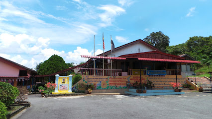
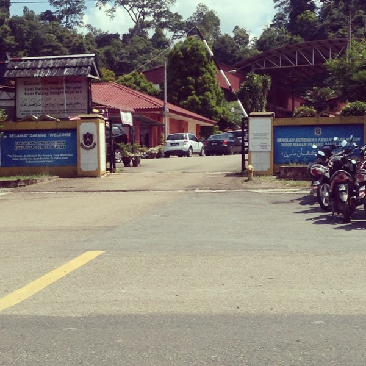

MY PRIMARY SCHOOL.

- SEKOLAH KEBANGSAAN SENGGORA (SKS)
- From 2006-2013
- Located at Kampung Senggora, Maran, Pahang
- Since pre-school until I finished my UPSR
MY SECONDARY SCHOOL
- SEKOLAH MENENGAH AGAMA MARAN (SMAM)
- From 2014 until July of 2017
- Located at Maran, Pahang
- I studied at this religious stream school for only 3 and a half years and switched to a regular daily stream school due to health factors

- SEKOLAH MENENGAH KEBANGSAAN MARAN (SMKM)
- From September 2017 until 2018
- Located at Bandar Maran, Maran, Pahang
- I've finished my SPM in this school
TERTIARY EDUCATION.

- UNIVERSITI TEKNOLOGI MARA (UiTM) CAWANGAN KEDAH KAMPUS SUNGAI PETANI
- From 2021 until 2023
- Located at Merbok, Kedah
- Doing my Diploma in Library Management